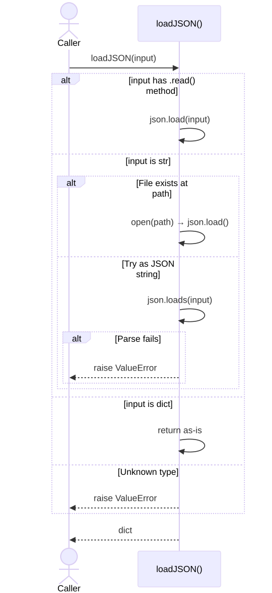
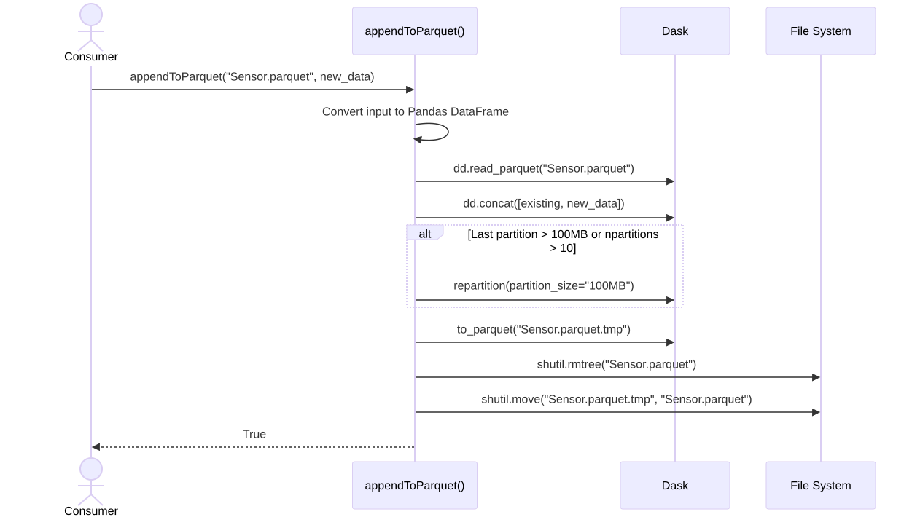

Utilities API¶
Module: argos.utils
Utility modules providing JSON parsing, Parquet I/O, and logging infrastructure used throughout pyArgos.
Module Structure¶
argos/utils/
jsonutils.py # Flexible JSON loading and flattening to DataFrames
parquetUtils.py # Parquet write and append with Dask
logging/
helpers.py # Logger helpers, EXECUTION level, config initialization
toolkit.py # Legacy logging toolkit (deprecated)
argosLogging.config # Default logging configuration
Class Dependency¶

Swimlane: loadJSON (Flexible Input)¶

Swimlane: Append to Parquet¶

Implementation Notes¶
JSON Utilities¶
loadJSONaccepts 4 input types: file object, file path string, JSON string, or dict — making it safe to call without knowing what you haveprocessJSONToPandasflattens nested JSON to a 2-column DataFrame (path, value), handling nested lists by appending_0,_1suffixesconvertJSONtoPandasrecursively flattens using dot notation (a.b.c) — keeps flattening until all values are scalarsconvertJSONtoConfis deprecated — it useseval()to convert string values to Python objects
Parquet Utilities¶
- Both functions accept Pandas DataFrames, Dask DataFrames, or raw data (auto-converted)
- Uses fastparquet engine (not pyarrow)
appendToParquetuses an atomic write pattern: write to.tmp, delete old, rename — prevents corruption on crash- Auto-repartitions when partitions grow too large (>100MB) or too numerous (>10)
- The datetime column is used as the Dask index for time-based partitioning
Logging¶
- Custom
EXECUTIONlevel (15) sits between DEBUG (10) and INFO (20) — used for step-by-step progress messages throughout pyArgos - Config is read from
~/.pyargos/log/argosLogging.config— created from package defaults on first use get_logger(instance)returns a logger named after the instance's class (e.g.,argos.manager.experimentManager)unify_all_logs_debug()merges all loggers to root — useful for debugging but not production
JSON Utilities¶
Module: argos.utils.jsonutils
loadJSON¶
argos.utils.jsonutils.loadJSON(jsonData)
¶
Reads the json object to the memory.
Could be:
* file object: any file-like object with the property 'read'.
* str: either the JSON or a path to the directory.
* dict: the JSON object.
Parameters:
| Name | Type | Description | Default |
|---|---|---|---|
jsonData
|
str, object file, path to disk, dict
|
The object that contains the dict. |
required |
Returns:
| Type | Description |
|---|---|
dict
|
The loaded JSON. |
Source code in argos/utils/jsonutils.py
processJSONToPandas¶
argos.utils.jsonutils.processJSONToPandas(jsonData, nameColumn='parameterName', valueColumn='value')
¶
Trnasforms a JSON to pandas, flattens a list items and names them according to their order
The example the JSON :
{
"nodes": {
"a" : {
"x" : 1,
"y" : 2,
"z" : 3
},
"b" : {
"r" : 1,
"t" : 2,
"y" : [3,2,4,5,6]
}
}
}
will be converted to
parameterName value
parameterName value
0 nodes.a.x 1 1 nodes.a.y 2 2 nodes.a.z 3 3 nodes.b.r 1 4 nodes.b.t 2 5 nodes.b.y_0 3 6 nodes.b.y_1 2 7 nodes.b.y_2 4 8 nodes.b.y_3 5 9 nodes.b.y_4 6
Notes:
- Currently does not support JSON whose root is a list.
[
{ "a" : 1 },
{ "b" : 2}
]
It will be supported if needed in the future.
Parameters
Parameters
jsonData : dict
the JSON data (a dict)
nameColumn: str
The name of the parameter column name
valueColumn : str
The name of the value
Source code in argos/utils/jsonutils.py
82 83 84 85 86 87 88 89 90 91 92 93 94 95 96 97 98 99 100 101 102 103 104 105 106 107 108 109 110 111 112 113 114 115 116 117 118 119 120 121 122 123 124 125 126 127 128 129 130 131 132 133 134 135 136 137 138 139 140 141 142 143 144 145 146 147 148 149 150 151 152 153 154 155 156 157 158 159 160 161 162 163 164 165 166 167 168 169 170 | |
convertJSONtoPandas¶
argos.utils.jsonutils.convertJSONtoPandas(jsonData, nameColumn='parameterNameFullPath', valueColumn='value')
¶
converts a JSON (either in file or loaded, or json str) to pandas.
The pandas flattens the JSON using the json path convection.
e.g
{
"a" : {
"b" : 1,
"c" : [1,2,3]
}
}
will be converted to
a.b 1
a.c_0 1
a.c_1 2
a.c_2 3
Does not support (currently) JSON whose root is a list but only supports dict
Parameters:
| Name | Type | Description | Default |
|---|---|---|---|
jsonData
|
(str, dict)
|
A json data either a file name, a json dict string, or a dict. nameColumn: str The name of the parameter column name valueColumn : str The name of the value |
required |
Returns:
| Type | Description |
|---|---|
pandas.DataFrame
|
with the fields nameColumn (the path of the json) and valueColumn |
Source code in argos/utils/jsonutils.py
convertJSONtoConf¶
argos.utils.jsonutils.convertJSONtoConf(JSON)
¶
Traverse the JSON and replace all the unum values with objects.
:param JSON: :return:
Source code in argos/utils/jsonutils.py
Parquet Utilities¶
Module: argos.utils.parquetUtils
writeToParquet¶
argos.utils.parquetUtils.writeToParquet(parquetFile, data, datetimeColumn='datetime')
¶
Writes a new parquet for the argos file.
We use the datetime column to create a [day]_[month]_[year] string for the
partition.
Parameters:
| Name | Type | Description | Default |
|---|---|---|---|
parquetFile
|
|
required | |
data
|
pandas/dask data
|
|
required |
datetimeColumn
|
str
|
The name of the datetime column for the partition. Provide the name even if it is the index. |
'datetime'
|
Returns:
| Type | Description |
|---|---|
None
|
|
Source code in argos/utils/parquetUtils.py
appendToParquet¶
argos.utils.parquetUtils.appendToParquet(toBeAppended, additionalData, datetimeColumn='datetime')
¶
Append to the parquet file and write it back to the original location.
Keep the partition size.
We assume it is the same structure.
We use the datetime column to create a [day]_[month]_[year] string for the
partitions.
Parameters:
| Name | Type | Description | Default |
|---|---|---|---|
toBeAppended
|
str
|
The file that is going to be appended. |
required |
additionalData
|
dask/pandas dataframe, list of dataframes.
|
The new data |
required |
datetimeColumn
|
str
|
The name of the column with the date time. If None, use index. |
'datetime'
|
Returns:
| Type | Description |
|---|---|
bool
|
True if successful |
Source code in argos/utils/parquetUtils.py
Logging¶
Module: argos.utils.logging.helpers
initialize_logging¶
argos.utils.logging.helpers.initialize_logging(*logger_overrides: (str, dict), disable_existing_loggers: bool = True) -> None
¶
Initialize logging for the Hera library
Calling this function configures loggers for the hera library, according to
the default configuration, with modifications you can add using :py:func:with_logger calls.
The function is called automatically when hera is imported, so you only need to call it explicitly if you really want to add such modifications.
To override e.g. the hera.bin logger's level to DEBUG, call like so::
initialize_logging(
with_logger("hera.bin", level="DEBUG"),
)
This will use the rest of the definitions for this logger (handlers, formatters, whatever other parameters the logger class takes) from the default configuration, if such definitions exist.
As the initialize in the name implies, you're expected to call this
function, if at all, before you start getting logger objects. If you call it
after some loggers were created, consider passing disable_existing_loggers=False.
Source code in argos/utils/logging/helpers.py
with_logger¶
argos.utils.logging.helpers.with_logger(logger_name, level=None, handlers=None, propagate=None) -> (str, dict)
¶
Build a logger override tuple for use with :func:initialize_logging.
Creates a (name, config_dict) tuple that can be passed as a
positional argument to initialize_logging(). Only non-None
parameters are included in the config dict, so existing settings
for omitted parameters are preserved.
Parameters:
| Name | Type | Description | Default |
|---|---|---|---|
logger_name
|
str
|
The logger name (e.g., |
required |
level
|
str
|
The log level (e.g., |
None
|
handlers
|
list[str]
|
List of handler names to attach to the logger. |
None
|
propagate
|
bool
|
Whether to propagate messages to parent loggers. |
None
|
Returns:
| Type | Description |
|---|---|
tuple[str, dict]
|
A |
Examples:
>>> initialize_logging(
... with_logger("argos.kafka", level="DEBUG"),
... with_logger("argos.manager", level="INFO", handlers=["console"]),
... )
Source code in argos/utils/logging/helpers.py
get_logger¶
argos.utils.logging.helpers.get_logger(instance, name=None)
¶
Get a logger for a class instance.
If UNIFY_ALL_LOGS_DEBUG is True, returns the root logger
(useful for debugging when you want all logs merged).
Parameters:
| Name | Type | Description | Default |
|---|---|---|---|
instance
|
object
|
The class instance to get the logger for. |
required |
name
|
str
|
If provided, returns a logger with this name instead of deriving it from the instance's class. |
None
|
Returns:
| Type | Description |
|---|---|
Logger
|
A logger for the instance's class, or a named logger if
|
Source code in argos/utils/logging/helpers.py
get_classMethod_logger¶
argos.utils.logging.helpers.get_classMethod_logger(instance, name=None)
¶
Get a logger for a specific method of a class instance.
The logger name includes the class's fully qualified name plus
the method name (e.g., "argos.manager.experimentManager.loadDevices").
Parameters:
| Name | Type | Description | Default |
|---|---|---|---|
instance
|
object
|
The class instance. |
required |
name
|
str
|
The method name to append to the logger name. If None, uses the class name only. |
None
|
Returns:
| Type | Description |
|---|---|
Logger
|
A logger named |
Source code in argos/utils/logging/helpers.py
getClassLogger¶
argos.utils.logging.helpers.getClassLogger(cls: type)
¶
Get a logger named after a class using its fully qualified name.
The logger name is built from cls.__module__ and cls.__qualname__
(e.g., "argos.manager.experimentManager").
Parameters:
| Name | Type | Description | Default |
|---|---|---|---|
cls
|
type
|
The class to get the logger for. |
required |
Returns:
| Type | Description |
|---|---|
Logger
|
A logger named |
Source code in argos/utils/logging/helpers.py
unify_all_logs_debug¶
argos.utils.logging.helpers.unify_all_logs_debug()
¶
Merge all loggers to the root logger for debugging.
When enabled, all calls to :func:get_logger return the root logger,
so all log messages go to a single output. This is useful for debugging
but should not be used in production.